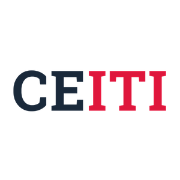

quiz CEITI
Ce specialitate ți se potrivește de fapt?
Răspunde sincer, iar la final vei primi o recomandare orientativă, bazată pe stilul tău de lucru, preferințe psihologice și tipul de sarcini care te energizează.
6 specialități
CEITI
CEITI
algoritm
pe criterii
pe criterii

Răspunde sincer
Întrebări de profil
Aici nu alegi specialitatea direct. Alegi felul în care gândești, reacționezi și lucrezi, iar scorul compară profilul tău cu cele 6 direcții CEITI.
Recomandare principală
Ce ți-a tras scorul în sus
Alte opțiuni apropiate